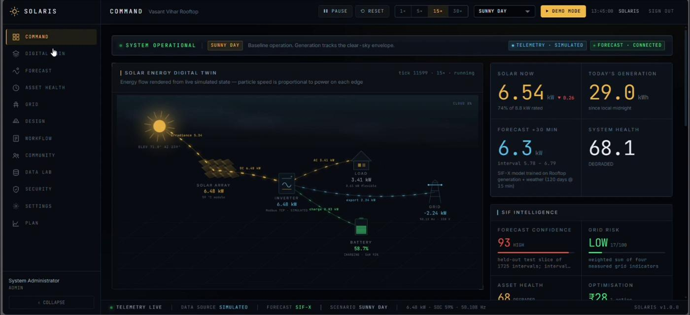
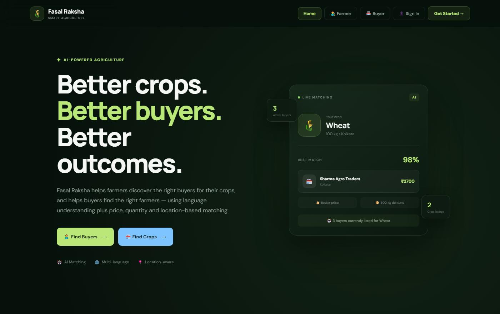
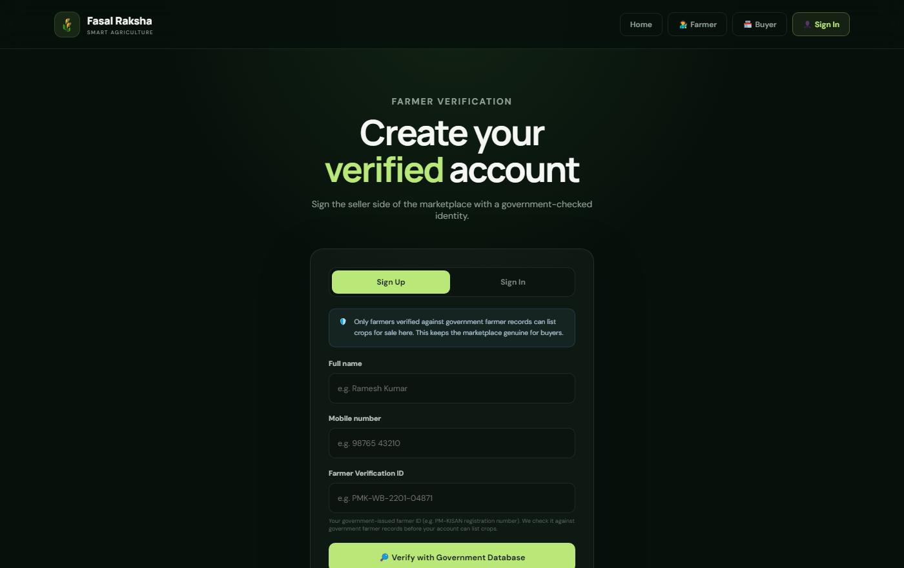
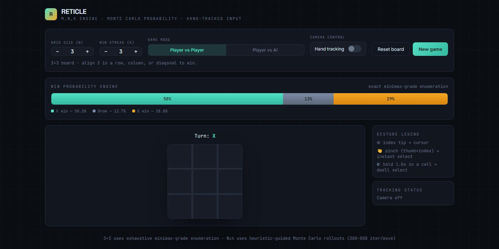
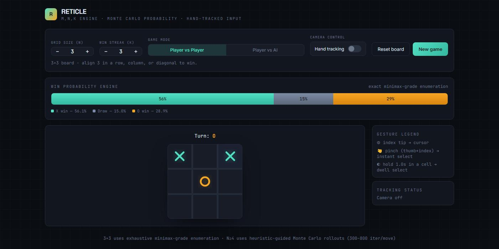
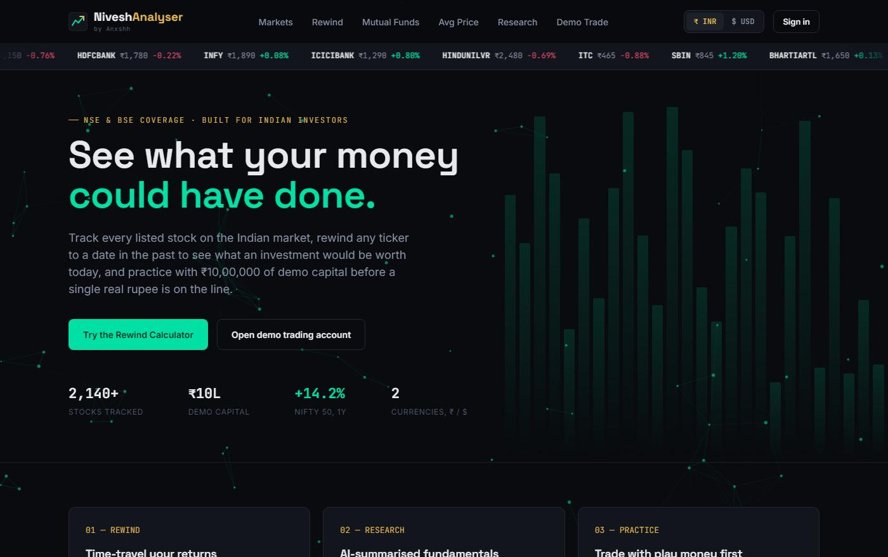
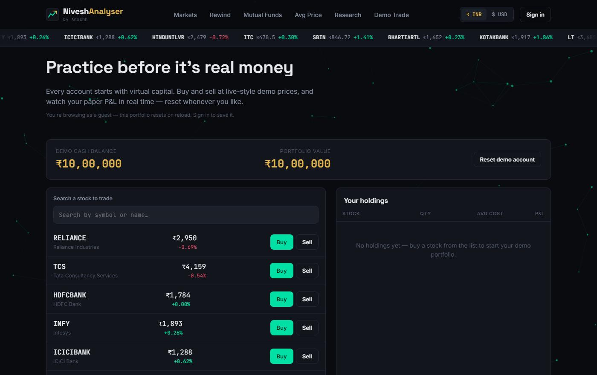
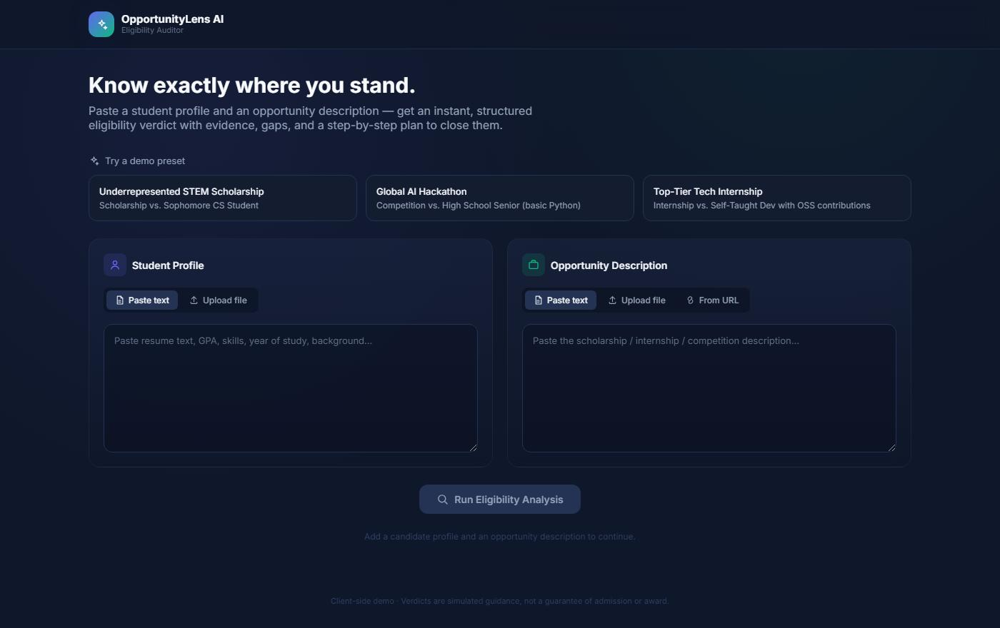
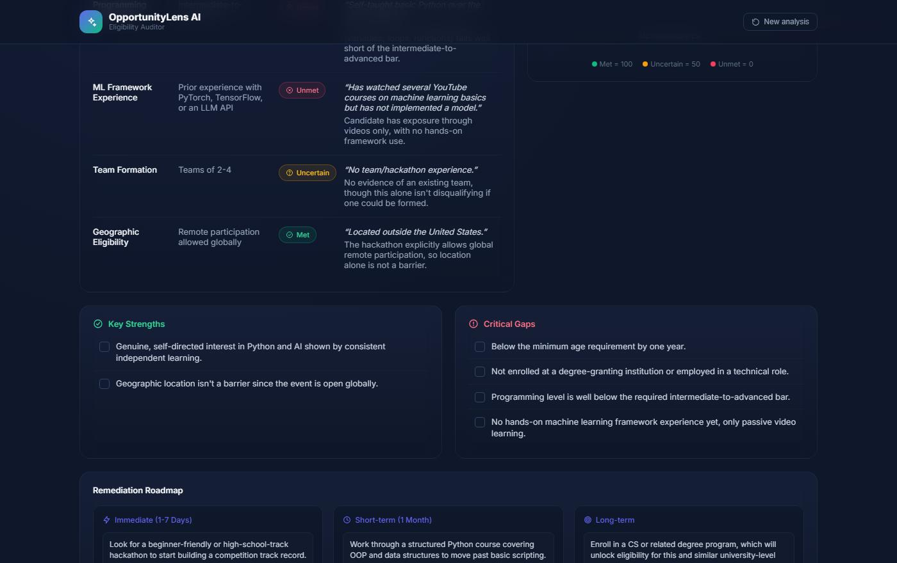

Every Project
Six builds, written up properly: what each one is for, how it actually works underneath, and where its limits are. The last part matters most. Every claim below is drawn from the project's own repository documentation.
SOLARIS
Solar intelligence for the living grid. A unified layer over generation, weather, storage, grid conditions, installation geometry, tariffs and regulatory workflow — turning all of it into decisions that can be argued with. Not a monitoring dashboard: the thing it replaces is the spreadsheet an operator keeps open beside four other tools.

The Command Center. Every tile is labelled by where its number came from.
The idea it is built on
Every number the product displays comes from one of three places, and the interface always says which: SIF-X (a model trained in-app on your data, with metrics measured on a held-out slice), Physics (solar geometry and irradiance from published models — NOAA, Haurwitz, Erbs, Liu–Jordan, PVWatts), or SIMULATED (the deterministic scenario engine, labelled as such everywhere it surfaces).
No external API is contacted. No integration reports CONNECTED unless an endpoint is
genuinely configured, and there are no hard-coded accuracy claims anywhere in the codebase.
My role
Technical Lead on a three-person team from Techno India University — Tanisha Dey led the team and Rohit Singh led the non-technical side. I directed the architecture across the Python service, the React front end and the ML engine, and held two constraints through the whole build: every model output ships with its confidence, drivers and reasoning; and the platform installs and runs offline, with no GPU.
The three chains that genuinely work end to end
-
Scenario → decision
Change the scenario on the Command Center and it propagates: the weather layer, the SIF-X forecast, composite grid risk, the battery trajectory, the dispatch optimum and the recommended action all move, because they all read one simulated physical state.
-
Roof → annual yield
Drag a tree on the Design canvas. Shadows re-project from real solar geometry, per-module shading losses change, and the optimiser searches mount type, tilt, azimuth and orientation for maximum annual kWh — subject to roof area, fire-code setback and winter row pitch.
-
Dataset → live forecast
Upload a CSV in the Data Lab. The engine infers the schema, trains, reports MAE, RMSE, R² and interval coverage on a chronologically held-out slice, compares itself against three baselines, and then serves the live Command Center forecast from that model.
SIF-X, the engine
The ML engine deliberately has no deep-learning framework dependency. SIF-X is implemented directly on NumPy with hand-derived backpropagation — which is why a trained artefact is on the order of 70 KB, inference needs no GPU, and the whole platform runs offline.
Twelve surfaces ship in the app, from Command and Digital Twin through Forecast, Asset Health, Grid, Design, Workflow, Data Lab and Security. The interface is available in five languages: English, Hindi, Bengali, Tamil and Marathi. 148 backend tests cover it.
Honest limits
- The repository opens by telling you to read
LIMITATIONS.mdbefore judging any claim in it. - Scenario state is simulated and labelled
SIMULATEDwherever it appears on screen. - External integrations are seams, not live connections — nothing reports connected unless it really is.
- Demo credentials are published deliberately; the API refuses to boot in production while any secret is still at its default.
- Python 3.11
- FastAPI
- SQLAlchemy 2.0
- NumPy
- pandas
- React 18
- TypeScript
- Vite
- Tailwind v4
- Zustand
ArthSetu
FinTech for Bharat — making every rupee explainable. Not a set of mock screens: the parsers parse, the model trains on whatever you upload, the audit chain verifies, and every number on every screen traces back to the transactions that produced it.
A structural diagram of the BACTE scoring model, not a screenshot.
Seven capabilities, each answering a failure real users hit
Where's My Money
"It says debited but not received. Where is it?" — a transparency engine that shows which leg of the rail a payment is sitting on, who owns the next action, and a realistic resolution window. Not a spinner.
Dispute & refund tracker
"I raised a complaint three weeks ago and no one will tell me anything."
Portable KYC credential
"I did KYC last month. Why am I doing it again?" — issue a credential, grant a lender scoped access, watch the disclosure log, revoke it, watch the read fail.
BACTE credit scoring
"I earn every day but no bureau score, so no credit." — cashflow-based scoring with no bureau data, no black box and no external model API.
Voice-first, vernacular-first
"I can speak but I cannot read the form."
Offline-resilient commerce
"The network drops halfway through a payment." — actions queue as a preparation, never as an executed payment.
Trust layer
"Every seller has five stars. Which ones are real?" — a trust graph that shows the coordinated review cluster, not just a badge.
The technical centrepiece
BACTE — Behavioural Analysis of Cashflow for Trust Estimation. Six pillars computed from raw transaction history, combined into a 0–1000 score whose contributions sum exactly to the score. Open the explanation and each contribution is signed and links back to the transactions behind it.
A PDF Transaction Intelligence extension sits on top: upload a bank statement, and the platform extracts, categorises, explains and scores it, reporting rows found, rows parsed, confidence, and what it could not read. Correct one category and the classifier learns from it.
Honest limits
- Every external integration — UPI, Account Aggregator, DigiLocker, bank ledger — is a simulated adapter behind a real interface. Screens showing simulated state say so on screen.
- Model metrics come from synthetic data, so the reported AUC measures internal consistency, not real-world predictive power.
- PDF extraction is text-layer only. Scanned statements are rejected with an explanation rather than silently producing garbage. No OCR.
- Voice is offline keyword matching over six intents, not open-ended understanding — it says so when it does not understand instead of guessing.
- Not a bank, lender, UPI operator or KYC provider; nothing is certified against RBI, UIDAI, NPCI or DPDP requirements, and no such claim is made.
- TypeScript
- Python 3.12
- FastAPI
- SQLite / PostgreSQL
- Docker
- Playwright
- 84 endpoints
Fasal Raksha
AI-assisted farmer–buyer matching, built against a blunt problem: produce goes unsold and spoils because farmers cannot quickly find the right buyer at the right price. A farmer describes a crop — by typing or by speaking — and the platform ranks every buyer in the marketplace by fit. The whole build is a single self-contained HTML file: no server, no build step, no install.


Left, the live matching panel. Right, the verification gate that stands between a new account and the ability to list crops.
How the matching works
matchScore(sell, buy) blends four signals into a single percentage:
crop match (exact scores highest, partial or synonym moderately),
location match (same city scores highest), price fit (how close the
buyer's offer is to the farmer's ask) and quantity fit (how well supply and demand
line up). Scores are clamped to a realistic 55–98% band and used to rank buyers for farmers, and
listings for buyers. Nothing is hardcoded.
Voice, in four languages
The mic button uses the browser's native Web Speech API. Recognition language follows the farmer's
selection — English en-IN, Hindi hi-IN, Bengali bn-IN, Punjabi
pa-IN — and transcribed text appends live into the message box as they speak. The same
language selector drives the text parser. If the browser has no speech support or the mic is denied,
it says so rather than failing silently.
Verification, and its boundary
A farmer must verify a government-issued Farmer Verification ID before they can list crops. A match returns the registered name, district and state for confirmation; a non-match is rejected with a clear explanation.
Because this build is a static offline file, that check runs against a bundled mock registry — it does not call a real government system, and the README says so plainly. The code is commented at the integration point with the intended production flow: the browser should never hold a government API key.
Honest limits
- No real backend — all data is local to the browser via
localStorage. - Farmer ID verification checks a demo dataset, not a real government database.
- No password or OTP security; sign-in matches a Farmer ID and phone number against a local record.
- Voice depends on Web Speech API support — best in Chrome, limited or absent in Safari and Firefox.
- JavaScript
- Web Speech API
- Groq (optional)
- localStorage
- Single file
- Offline-first
RETICLE
Tic-Tac-Toe generalised into an m,n,k engine you play with your hands. Set the grid size and the win-streak length, then play a human or the AI — with live win-probability distributions on every turn and touchless control through a standard webcam.


The same game, three moves apart — the probability bar recomputes from exact enumeration on every turn, which is why it moves from 58.5% to 56.1%.
The probability engine
On 3×3 boards with K=3, it performs exact recursive enumeration across all valid game branches — the win, draw and loss probabilities it shows are exact, not estimated.
On N ≥ 4, exact search stops being tractable, so it runs Monte Carlo rollouts — 300 to 800 iterations per move — to approximate the same distribution in real time.
The opponent
The AI switches strategy on the same boundary. 3×3 uses minimax with alpha–beta pruning, which guarantees optimal play. N ≥ 4 uses heuristic-guided Monte Carlo Tree Search: it checks immediate wins and blocks first, then runs heuristic candidate rollouts to find the highest-value tactical move.
Hands-free control
Index tip
Moves the virtual reticle cursor across the board, tracked by MediaPipe Hands.
Pinch (thumb + index)
Instant cell selection.
Dwell (1.0s hold)
Hover over a cell for one second to select it — the fallback when pinch detection is unreliable.
- JavaScript ES6+
- MediaPipe Hands
- Minimax
- Alpha–beta
- MCTS
- SVG
Nivesh Analyser
An investment-learning and stock-analysis dashboard for the Indian market. Explore listed companies, evaluate historical performance, and practise portfolio management with ₹10,00,000 of virtual capital — learning the concepts before any real money is at risk.


Right, a fresh demo account — ₹10,00,000 in virtual capital, no holdings yet.
Six tools in one dashboard
Historical calculator
Pick a listed stock and a date up to five years back, enter an amount, and see what a lump sum or a monthly SIP would be worth today.
Mutual fund calculator
Model SIP or lump-sum investments against an expected annual return, split between invested amount and growth.
Stock analysis
Plain-language summaries of fundamentals, recent developments, pros and cons, probability-based outlooks and simplified signals.
Market overview
Headline indices and the stocks driving movement — sector, current price, daily change and one-year CAGR.
Weighted average
Enter multiple purchase quantities and prices for the same stock to find your true average cost.
Virtual portfolio
Start with ₹10,00,000 in demo capital, buy and sell at live-style prices, track holdings and paper P&L, reset any time.
Stated plainly, on the page and in the README
- All projections, signals and outlooks are for educational and simulation purposes only.
- Nothing in it constitutes financial advice, and actual market performance may differ significantly.
- No real capital is ever involved — the portfolio is virtual and resettable.
- JavaScript
- HTML
- CSS
- Single file
- Client-side
OpportunityLens AI
An automated eligibility auditor and candidate-opportunity matcher. Point it at a scholarship, internship or hackathon and it returns structured, evidence-based feedback on whether an applicant is actually ready — what qualifies them, and what does not. Runs entirely client-side.


Right is a run of the bundled Global AI Hackathon preset — every criterion marked Met, Uncertain or Unmet quotes the line of the profile it was judged on.
What it is for
Students lose weeks applying to things they were never eligible for, because the criteria are buried in a PDF. Paste a profile and an opportunity description and it returns a verdict per criterion — Met, Uncertain or Unmet — and each one quotes the line of the profile it was judged on, so the reasoning is inspectable rather than asserted.
Underneath the criteria table it separates key strengths from critical gaps, then lays out a remediation roadmap split into immediate, short-term and long-term work. The point is not a yes or no — it is knowing which gap to close first.
Why client-side matters here
Everything runs in the browser. Nobody's academic record, age, income bracket or application history leaves their machine to get a readiness check — which is the right default for a tool whose input is a complete personal profile.
Three demo presets ship with it, so the tool can be evaluated without anyone pasting real details in.
Honest limits
- The build says it on its own footer: verdicts are simulated guidance, not a guarantee of admission or award.
- The repository ships a single demo HTML file with no README.
- A demo build rather than a maintained product, and the opportunity set is bundled rather than live.
- The earliest of the six projects, and the least developed.
- JavaScript
- HTML
- Rules engine
- Client-side
That's all six
Every repository above is public, and four of the six run from a single file you can download and open without installing anything. If you want to talk about any of them, the contact details are back on the portfolio.
← Back to the portfolio